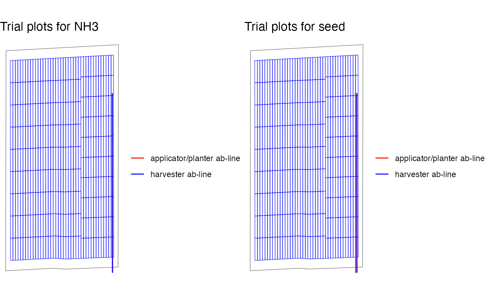

Here, we demonstrate a typical workflow of using the
ofpetrial package to create a trial design through an
example of two-input on-farm experiment trial.
Create experimental plots
Prepare plot information for the inputs
We start with specifying plot and machine information for inputs
using prep_plot, which simply creates a data.frame of the
specified information with some internal unit conversion of length
(e.g., feet to meter).
#--- for nitrogen ---#
n_plot_info <-
prep_plot(
input_name = "NH3",
unit_system = "imperial",
machine_width = 30,
section_num = 1,
harvester_width = 30,
plot_width = 30
)
#>
dplyr::glimpse(n_plot_info)
#> Rows: 1
#> Columns: 11
#> $ input_name <chr> "NH3"
#> $ unit_system <chr> "imperial"
#> $ machine_width <dbl> 9.144
#> $ section_num <dbl> 1
#> $ section_width <dbl> 9.144
#> $ harvester_width <dbl> 9.144
#> $ plot_width <dbl> 9.144
#> $ headland_length <dbl> 18.288
#> $ side_length <dbl> 9.144
#> $ min_plot_length <dbl> 73.152
#> $ max_plot_length <dbl> 91.44
#--- for seed ---#
seed_plot_info <-
prep_plot(
input_name = "seed",
unit_system = "imperial",
machine_width = 60,
section_num = 24,
harvester_width = 30,
plot_width = 30
)
#>
dplyr::glimpse(seed_plot_info)
#> Rows: 1
#> Columns: 11
#> $ input_name <chr> "seed"
#> $ unit_system <chr> "imperial"
#> $ machine_width <dbl> 18.288
#> $ section_num <dbl> 24
#> $ section_width <dbl> 0.762
#> $ harvester_width <dbl> 9.144
#> $ plot_width <dbl> 9.144
#> $ headland_length <dbl> 36.576
#> $ side_length <dbl> 9.144
#> $ min_plot_length <dbl> 73.152
#> $ max_plot_length <dbl> 91.44Create experimental plots
Now that plot and machine specifications for the inputs are ready, we
can create experiment plots based on them using
make_exp_plots(). Since this is a two-input case, you
create a list of plot information and the provided that to
make_exp_plots() along with the path to the field boudary
and ab-line files (you can alternatively provide those data as
sf objects.).
input_plot_info <- list(n_plot_info, seed_plot_info)
exp_data <-
make_exp_plots(
input_plot_info = input_plot_info,
boundary_data = system.file("extdata", "boundary-simple1.shp", package = "ofpetrial"),
abline_data = system.file("extdata", "ab-line-simple1.shp", package = "ofpetrial"),
abline_type = "free"
)
#> Linking to GEOS 3.11.0, GDAL 3.5.3, PROJ 9.1.0; sf_use_s2() is TRUEThe experiment plots created by make_exp_plots() is
stored in exp_plots.
exp_data$exp_plots
#> [[1]]
#> Simple feature collection with 382 features and 3 fields
#> Geometry type: POLYGON
#> Dimension: XY
#> Bounding box: xmin: -16.70058 ymin: 39.11991 xmax: -16.69624 ymax: 39.12662
#> Geodetic CRS: WGS 84
#> First 10 features:
#> plot_id poly_line strip_id geometry
#> 1 1 1_1 1 POLYGON ((-16.69624 39.1200...
#> 2 2 1_1 1 POLYGON ((-16.69624 39.1206...
#> 3 3 1_1 1 POLYGON ((-16.69624 39.1213...
#> 4 4 1_1 1 POLYGON ((-16.69624 39.122,...
#> 5 5 1_1 1 POLYGON ((-16.69624 39.1226...
#> 6 6 1_1 1 POLYGON ((-16.69625 39.1233...
#> 7 7 1_1 1 POLYGON ((-16.69625 39.1239...
#> 8 8 1_1 1 POLYGON ((-16.69625 39.1246...
#> 9 9 1_1 1 POLYGON ((-16.69625 39.1253...
#> 10 10 1_1 1 POLYGON ((-16.69625 39.1259...
#>
#> [[2]]
#> Simple feature collection with 382 features and 3 fields
#> Geometry type: POLYGON
#> Dimension: XY
#> Bounding box: xmin: -16.70058 ymin: 39.11991 xmax: -16.69624 ymax: 39.12662
#> Geodetic CRS: WGS 84
#> First 10 features:
#> plot_id poly_line strip_id geometry
#> 1 1 1_1 1 POLYGON ((-16.69624 39.1200...
#> 2 2 1_1 1 POLYGON ((-16.69624 39.1206...
#> 3 3 1_1 1 POLYGON ((-16.69624 39.1213...
#> 4 4 1_1 1 POLYGON ((-16.69624 39.122,...
#> 5 5 1_1 1 POLYGON ((-16.69624 39.1226...
#> 6 6 1_1 1 POLYGON ((-16.69625 39.1233...
#> 7 7 1_1 1 POLYGON ((-16.69625 39.1239...
#> 8 8 1_1 1 POLYGON ((-16.69625 39.1246...
#> 9 9 1_1 1 POLYGON ((-16.69625 39.1253...
#> 10 10 1_1 1 POLYGON ((-16.69625 39.1259...exp_data$exp_plots is a list of experimental plots in
sf. The first element is for nitrogen and the second for
seed following the order of information you provided in
input_plot_info. You can access the individual experiment
plots (an sf object) like this.
exp_data$exp_plots[[1]]
#> Simple feature collection with 382 features and 3 fields
#> Geometry type: POLYGON
#> Dimension: XY
#> Bounding box: xmin: -16.70058 ymin: 39.11991 xmax: -16.69624 ymax: 39.12662
#> Geodetic CRS: WGS 84
#> First 10 features:
#> plot_id poly_line strip_id geometry
#> 1 1 1_1 1 POLYGON ((-16.69624 39.1200...
#> 2 2 1_1 1 POLYGON ((-16.69624 39.1206...
#> 3 3 1_1 1 POLYGON ((-16.69624 39.1213...
#> 4 4 1_1 1 POLYGON ((-16.69624 39.122,...
#> 5 5 1_1 1 POLYGON ((-16.69624 39.1226...
#> 6 6 1_1 1 POLYGON ((-16.69625 39.1233...
#> 7 7 1_1 1 POLYGON ((-16.69625 39.1239...
#> 8 8 1_1 1 POLYGON ((-16.69625 39.1246...
#> 9 9 1_1 1 POLYGON ((-16.69625 39.1253...
#> 10 10 1_1 1 POLYGON ((-16.69625 39.1259...We can visualize the layout of the experiment plots using
viz() with type = "layout" option.
viz(exp_data, type = "layout", abline = TRUE)
As you can see, ab-lines for the applicator/planter and harvester were generated for each of the input. We will show how to export ab-lines later.
Assign rates
Let’s now assign input rates to the experimental plots we just
created. Before doing so, we need to prepare rate information for both
inputs using prep_rate(). Here,
design_type = "ls" (Latin Square) is used for both seed and
nitrogen experiments (see this
article for other design options and this
article for changing rates manually.).
Prepare rate information
You can use prep_rate() to prepare rate information
before assigning rates to the experimental plots. For nitrogen, exact
rates were specified through the rates option, and trial
design type is specified to be “ls” (short for Latin Square). For seed,
the minimum and maximum rates, and the number of rates were specified.
In this case, the code internally finds the rates automatically for
you.
#!===========================================================
# ! Assign rates
# !===========================================================
n_rate_info <-
prep_rate(
plot_info = n_plot_info,
gc_rate = 180,
unit = "lb",
rates = c(100, 140, 180, 220, 260),
design_type = "ls",
rank_seq_ws = c(5, 4, 3, 2, 1)
)
dplyr::glimpse(n_rate_info)
#> Rows: 1
#> Columns: 11
#> $ input_name <chr> "NH3"
#> $ rates_data <list> [<data.table[5 x 2]>]
#> $ design_type <chr> "ls"
#> $ num_rates <int> 5
#> $ gc_rate <dbl> 180
#> $ unit <chr> "lb"
#> $ tgt_rate_original <list> <100, 140, 180, 220, 260>
#> $ tgt_rate_equiv <list> <82.0, 114.8, 147.6, 180.4, 213.2>
#> $ rank_seq_ws <list> <5, 4, 3, 2, 1>
#> $ rank_seq_as <list> <NULL>
#> $ rate_jump_threshold <lgl> NA
seed_rate_info <-
prep_rate(
plot_info = seed_plot_info,
gc_rate = 32000,
unit = "seed",
min_rate = 16000,
max_rate = 40000,
num_rates = 4,
design_type = "ls"
)
#> Trial rates were not directly specified, so the trial rates were calculated using min_rate, max_rate, gc_rate, and num_rates
dplyr::glimpse(seed_rate_info)
#> Rows: 1
#> Columns: 11
#> $ input_name <chr> "seed"
#> $ rates_data <list> [<data.table[4 x 2]>]
#> $ design_type <chr> "ls"
#> $ num_rates <int> 4
#> $ gc_rate <dbl> 32000
#> $ unit <chr> "seed"
#> $ tgt_rate_original <list> <16000, 24000, 32000, 40000>
#> $ tgt_rate_equiv <list> <16000, 24000, 32000, 40000>
#> $ rank_seq_ws <list> <NULL>
#> $ rank_seq_as <list> <NULL>
#> $ rate_jump_threshold <lgl> NAAssign rates
We can now use assign_rates() to assign rates to
experiment plots.
trial_design <- assign_rates(exp_data, rate_info = list(n_rate_info, seed_rate_info))Here is the visualization of the trial design done by
viz.
viz(trial_design, abline = TRUE)
Along with the spatial pattern of the input rates, the applicator/planter ab-line and harvester ab-line are drawn by default.
Diagnose the trial design
The ofpetrial package offers several functions to check
the soundness of a trial design (see this
article for more details and examples).
Here, let’s check the correlation between the seed and NH3 rates.
(
cor_inputs <- check_ortho_inputs(trial_design)
)
#> Checking the correlation between the two inputs. This may take some time depending on the number of experiment plots.
#> [1] 0.0202885The correlation coefficient is 0.02, which is certainly acceptable.
Make a trial design report
After creating a trial design you can download a trial report that serves as a guide for implementing the trial as well as a reminder of the equipment sizes, plot specifications, and treatment levels that were chosen. The report is saved as an html document named “trial_design_report.html”. Along with basic information about the design (total amount of inputs to be applied, number of replicates of each treatment level, plot size, etc.), the report also contains figures displaying how the provided ab-lines and machines will line up inside the trial plots.
make_trial_report(
td = trial_design,
folder_path = getwd()
)Write the trial design files for implementation
Once you are satisfied with the trial design and the location of the ab-lines, you can write out all the necessary files as shape files for the machine operators to actually implement the trial.
write_trial_files(td, folder_path = getwd(), zip = TRUE, zip_name = "td-collection")Here, all the shape files (trial dsign, applicator/planter ab-line, and harvester ab-line) are packed in a zipped folder, named “td-collection.zip”.